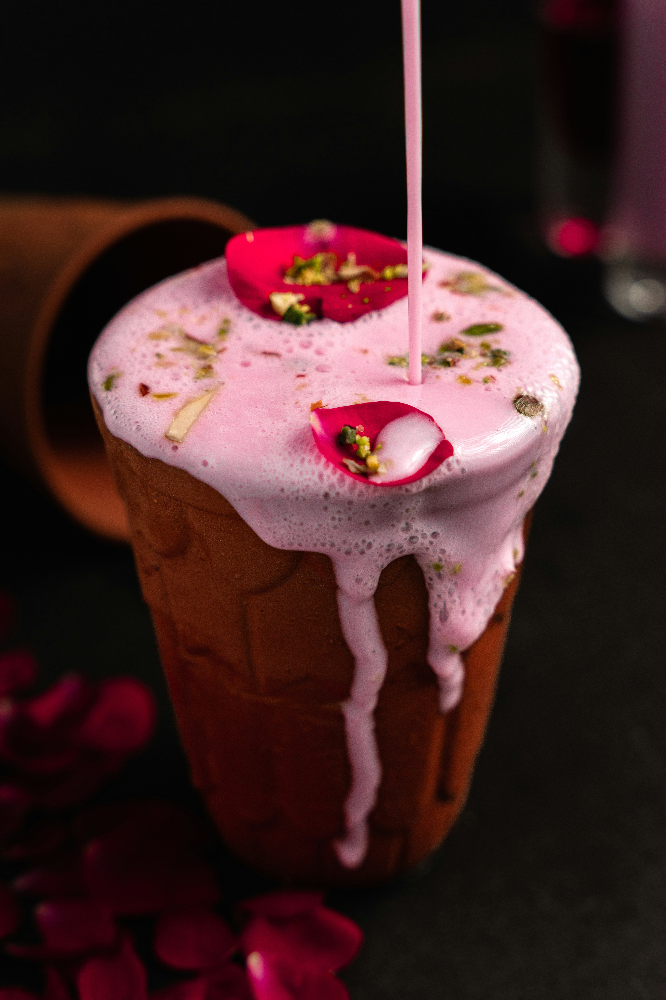

Lassi is a popular and traditional yogurt-based drink that originated in the Indian subcontinent. It is widely loved for its refreshing taste, creamy texture, and cooling properties, making it the perfect beverage for hot summer days. Here is a beautiful description of lassi that you can use: "Lassi is a heavenly, refreshing blend of rich yogurt, water or milk, and a perfect touch of sweetness or spice. Served ice-cold, it has a smooth, velvety texture that instantly cools the body and satisfies the soul. Whether enjoyed as a classic Sweet Lassi scented with rosewater, a fruity Mango Lassi exploding with tropical flavor, or a traditional Salted Lassi (Chaas) infused with roasted cumin and mint, this authentic drink is a true celebration of comfort and taste. It is not just a beverage; it is a delicious, creamy experience that perfectly complements any meal or shines all on its own as a revitalizing treat." 🌟 Key Features of Lassi to Note: • Yogurt Base: It is naturally packed with probiotics, making it excellent for digestion. • Versatile Flavors: It easily adapts to different tastes, from sweet and fruity to savory and spiced. • Texture: It can range from light and frothy to thick, rich, and ultra-creamy (often topped with a dollop of fresh cream or malai). Would you like me to modify this description to focus on a specific type of lassi, like mango lassi or salted lassi, or do you need it for a specific purpose like a restaurant menu or a social media post?